Questionário
O questionário é uma técnica com intuito de compreender o público-alvo e os diversos tipos de usuários que utilizam a aplicação. A fim de levantar mais requisitos que públicos específicos utilizam.
Para a preparação do questionário, levamos em consideração usuários e não usuários da aplicação. Para usuários, nossos principais interesses foram a interface, se intuitiva ou não e opinões sobre as principais funcionalidades do Deezer.
Após feedbacks sobre o questionário no primeiro ponto de controle, decidimos elaborar outra versão com condições de usuários de streaming de música e de usuários do Deezer.
| Número | Versão | Data |
|---|---|---|
| Versão 1 | Questionário 1 | 12/09/2019 |
| Versão 1.1 | Questionário 1.1 | 19/09/2019 |
| Versão 1.1 | Questionário 1.2 (Atual) | 25/11/2019 |
Resultado
Data de realização: 17/09/2019 - 25/11/2019.
Reunião presencial.
Idade
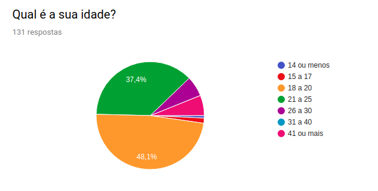
Com as respostas que obtivemos, podemos visualizar nosso público alvo. A maioria possui entre 18 e 20 anos, mas há também uma quantidade significativa de usuários entre 21 a 25. Essas taxas combinadas, somam mais de 80% do nosso público.
Frequência
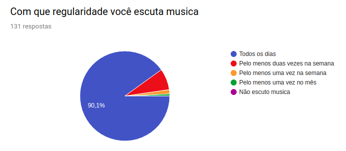
A grande maioria do nosso público ouve música todos os dias.
Streaming de Música
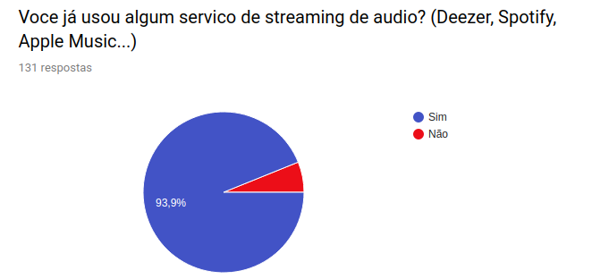
Além disso, a grande maioria também utiliza ou já utilizou algum serviço de streaming de áudio.
Essa parte do questionário, contém uma condição. As respostas apresentadas a seguir são daqueles usuários que utilizam ou já utilizaram algum serviço de streaming de áudio.
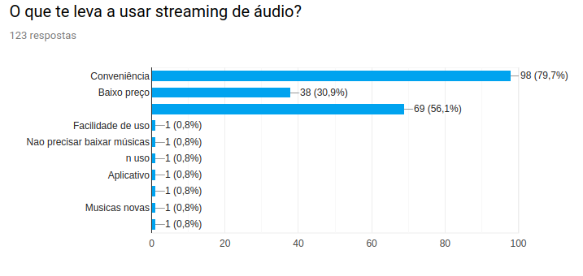
Sobre o que leva esse público a utilizar serviço de streaing de áudio, podemos notar relevância em conveniência (fácil acesso), baixo preço e mais opções de áudio disponíveis.
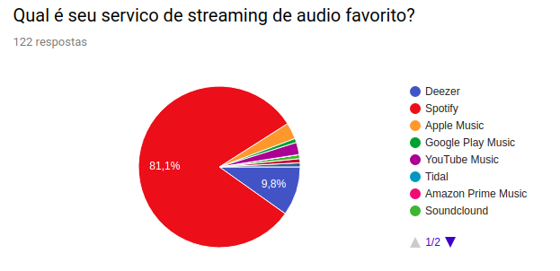
Em relação a preferência de plataforma, a grande maioria tem preferência pelo Spotify e o Deezer em segundo lugar.
Usuário Deezer
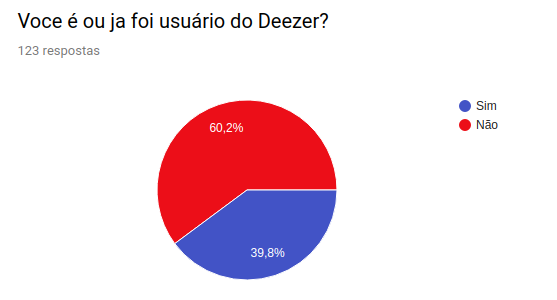
Nosso público, em sua maioria, já foi ou são usuários Deezer.
A partir desse momento, o questionário lida com uma condição. As respostas posteriores são apenas para aqueles que são ou já foram usuários do Deezer.
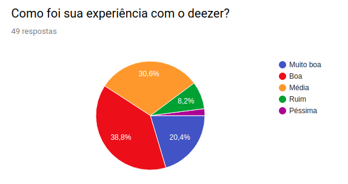
É possível notar, que em sua maioria, o público alvo descreve a experiência como "Boa" ou "Muito boa". Ainda há uma grande taxa de experiência média.
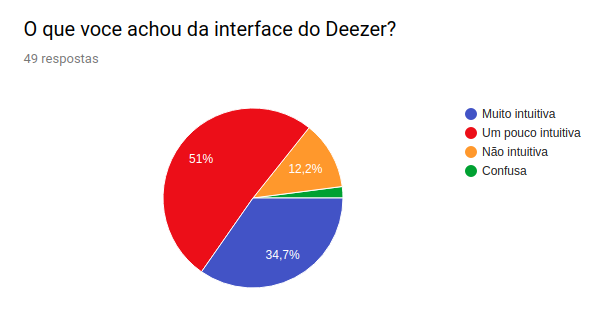
Em relação a interface, obtivemos mais respostas para pouco intuitiva e algo considerável para muito intuitiva.
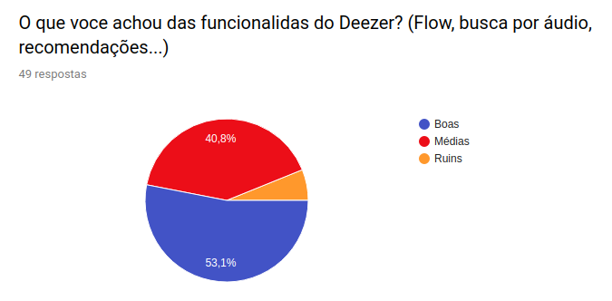
Sobre as funcionalidades diferenciais da aplicação, houve respostas para a grande maioria (mais da metade) como funcionalidade boas, e mais de 40% como funcionalidades medianas.
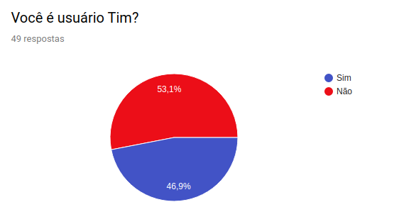
O Deezer possui uma parceria com a Tim, em que usuários da Tim podem ser usuários do Deezer Premium gratuitamente. Por curiosidade, perguntamos ao nosso público se eles são usuários Tim. Vimos que em nossa amostra, houve quase 50% de usuários Tim.
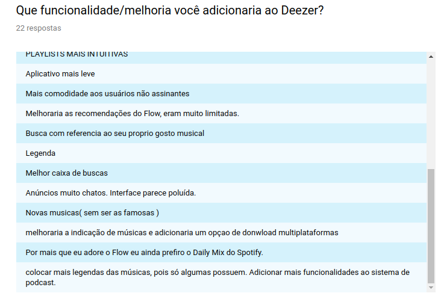
E por fim, obtivemos mais 10 respostas a respeito de melhorias/funcionalidades que adicionariam ao Deezer.